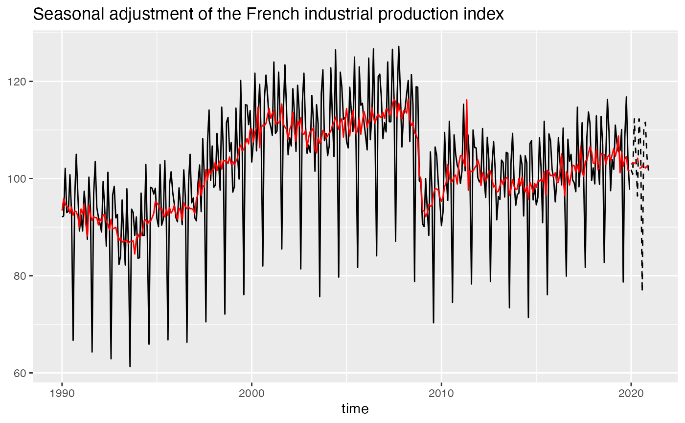

Performs a seasonal adjustment and plots a time seriesAids the eye in seeing patterns in the presence of overplotting. geom_sa() and stat_sa() are aliases: they both use the same arguments. Use stat_sa() if you want to display the results with a non-standard geom.
geom_sa(
mapping = NULL,
data = NULL,
stat = "sa",
position = "identity",
...,
method = c("x13", "tramoseats", "x11-extended", "fractionalairline",
"fractionalairlineestimation", "multiairline"),
spec = NULL,
frequency = NULL,
message = TRUE,
component = "sa",
show.legend = NA,
inherit.aes = TRUE
)
stat_sa(
mapping = NULL,
data = NULL,
geom = "line",
position = "identity",
...,
method = c("x13", "tramoseats", "x11-extended", "fractionalairline",
"fractionalairlineestimation", "multiairline"),
spec = NULL,
frequency = NULL,
message = TRUE,
component = "sa",
show.legend = NA,
inherit.aes = TRUE
)Set of aesthetic mappings created by aes() or
aes_(). If specified and inherit.aes = TRUE (the
default), it is combined with the default mapping at the top level of the
plot. You must supply mapping if there is no plot mapping.
A data.frame that contains the data used for the seasonal adjustment.
The statistical transformation to use on the data for this layer, as a string.
Position adjustment, either as a string, or the result of a call to a position adjustment function.
Other arguments passed on to layer(). These are
often aesthetics, used to set an aesthetic to a fixed value, like
colour = "red" or size = 3.
the method used for the seasonal adjustment. "x13" (by default) for the X-13ARIMA method and "tramoseats" for TRAMO-SEATS.
the specification used for the seasonal adjustment.
See rjd3x13::x13() or rjd3tramoseats::tramoseats().
the frequency of the time series. By default (frequency = NULL),
the frequency is computed automatically.
a boolean indicating if a message is printed with the frequency used.
a character equals to the component to plot. The result must be a time series.
See rjd3x13::userdefined_variables_x13() or rjd3tramoseats::userdefined_variables_tramoseats()for the available
parameters. By default (component = 'sa') the seasonal adjusted component is plotted.
logical. Should this layer be included in the legends?
NA, the default, includes if any aesthetics are mapped.
FALSE never includes, and TRUE always includes.
It can also be a named logical vector to finely select the aesthetics to
display.
If FALSE, overrides the default aesthetics,
rather than combining with them.
The geometric object to use to display the data
p_ipi_fr <- ggplot(data = ipi_c_eu_df, mapping = aes(x = date, y = FR)) +
geom_line() +
labs(title = "Seasonal adjustment of the French industrial production index",
x = "time", y = NULL)
# To add the seasonal adjusted series:
p_ipi_fr +
geom_sa(color = "red")
# To add the forecasts of the input data and the seasonal adjusted series:
p_sa <- p_ipi_fr +
geom_sa(component = "y_f", linetype = 2, message = FALSE) +
geom_sa(component = "sa", color = "red", message = FALSE) +
geom_sa(component = "sa_f", color = "red", linetype = 2, message = FALSE)
p_sa
